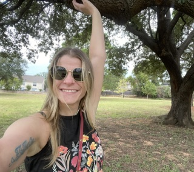
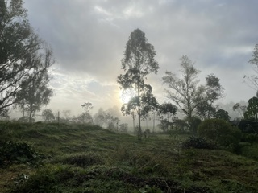
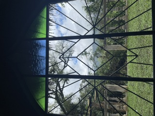
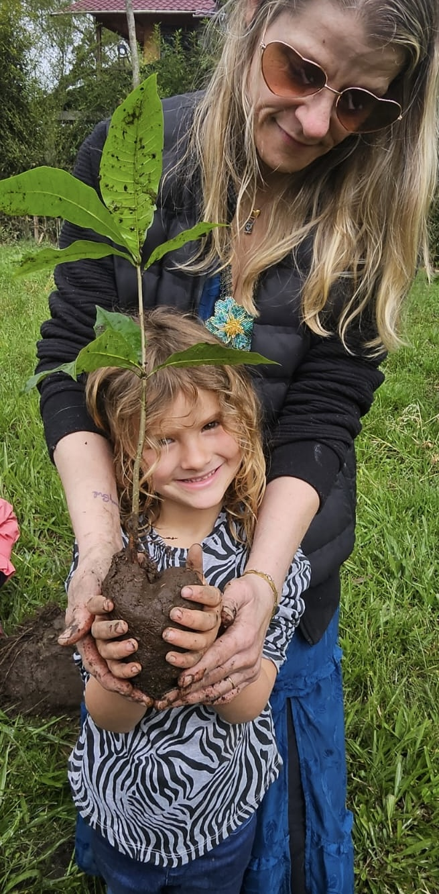
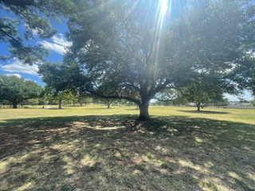
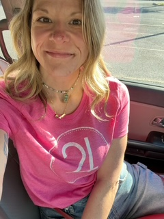

Our story
A Little Help?! started with a hard season, a trip to Colombia, and a dream I would never forget.

A hard season.
A few years ago, the world felt like it was pulling apart, and I felt it in my own life too. I lost a long friendship over politics, and it showed me how easily even people who know each other well can get split into sides. I have three kids, and I didn't want to hand that kind of world down to them.
It was a hard season in other ways too. My partner was in a mental health crisis, and I had just marked 10 years in recovery. Recovery taught me what to do when everything feels too big: get quiet and look inward. So I did.
Take the seeds home.
I went to the Sibundoy Valley in Putumayo, the sacred valley of the Kamëntsá people. I spent time at Shanayoy Healing Center with Taita Juan Bautista Agreda, Erika Salazar, and their families. Erika has worked alongside Taita Juan for over 20 years and lives on the land with her husband and children.


On the last ceremonial night, Taita told us to take the seeds we'd been given, and everything we'd learned, and plant them in our own communities back home. I've thought about that almost every day since.

I owe them more than I can repay, but I can point people their way.
Step-by-step instructions, delivered overnight.
Two nights after I got home, I had a dream that felt less like a dream and more like a training manual. My son was walking me through the jungle I had just left, explaining how to build a nonprofit, a website, and an app. It started with buying the domain and went all the way to registering with the state and the IRS. I woke up remembering every step. Honestly, it scared me a little.
It started with a sketch.
More than a year before Colombia, I kept picturing a big oak tree. My son and I were sitting in the branches, and small groups of people were gathered in the shade below. I didn't know what it meant, so I held onto it.
The logo came before the website, the app, or anything else. I sketched that tree by hand (honestly, closer to a stick figure) and used an AI image tool to turn my drawing into the finished logo. Later, a tree near my house kept stopping me on walks. When I looked it up, it was a live oak. It felt like the tree had been trying to tell me something all along.
Always in leaf. Live oaks keep their leaves all year, so there's never a season without shade.
Wide shade. The canopy covers everyone underneath, no exceptions.
The acorn. Every big oak starts as one small acorn, and kindness works the same way.

No tech background. A lot of trial and error.
I had never done anything technical in my life. My first website was one I built by hand on Dorik, and that alone was a steep learning curve. A Little Help?! took a lot of late nights, independent study, and the help of emerging AI tools, which were pretty basic at the time. Most of it I did the long way.
A Little Help?! became a 501(c)(3) in June 2025, and the app is getting ready for its first beta neighbors in DFW.
Small acts, rebuilding what's been pulled apart.
I've seen how easily people get sorted into sides. This app is my answer to that. When someone shows up to help you and they don't fit the picture you were given of "the other side," something shifts. One small act at a time, we can rebuild what's been pulled apart.

Megan Guessford
- Founder and Executive Director
- Mother of three
- 11 years in recovery
- Arlington, TX
Want to plant a few seeds with us?
Join the waitlist to be one of our first DFW neighbors, or chip in to keep the app free.